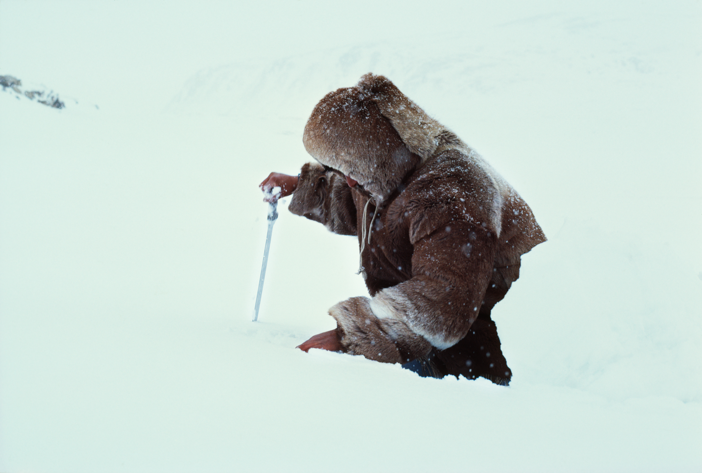
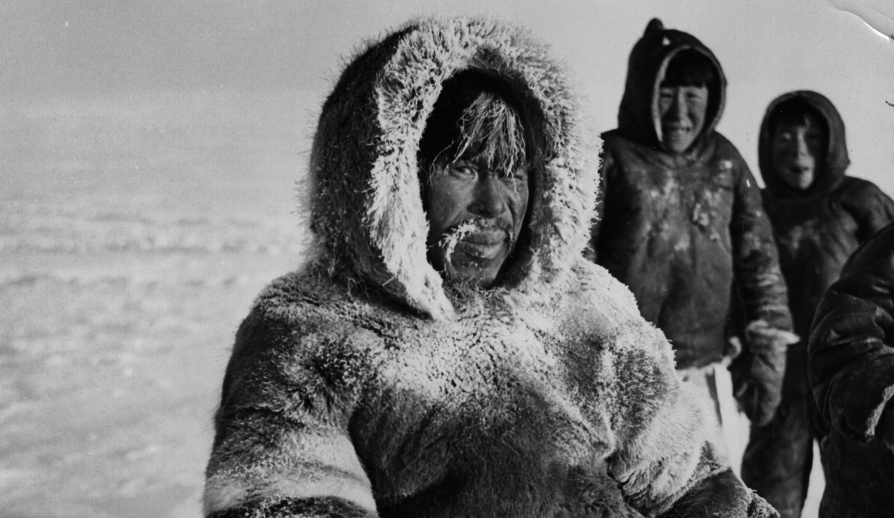

Los diferentes grupos humanos se han organizado de formas muy variadas a lo largo de la historia y en diferentes partes del mundo. En su texto “Ensayo sobre las variaciones estacionales en las sociedades esquimales”, Marcel Mauss busca entender estas diferencias en la “morfología social”, a partir de presupuestos materialistas. Nos dice que “al considerar las sociedades como grupos de hombres organizados sobre un punto determinado del globo, evitamos el error de considerarlas independientemente de su base territorial, pues está claro que la configuración del suelo, su riqueza mineral, su forma y su flora, afectan su organización" (Mauss, 1971:362).
Ya desde un principio Mauss se desprende del determinismo de la Antropogeografía, ya que “la situación propiamente geográfica está lejos de ser el hecho esencial sobre el que hay que centrar nuestra atención, pues es sólo una de las condiciones de las que depende la forma material de las agrupaciones humanas. Condición, además, que con frecuencia produce sus efectos a través de múltiples situaciones sociales que quedan afectadas por ella (..) el factor telúrico ha de ponerse en contacto con el medio social en su totalidad y complejidad; no puede quedar aislado” (Mauss, 1971:363). La elección de los Inuit para este estudio no es casual. El clima extremo del lugar y los cambios bruscos entre invierno y verano convierten a este pueblo en un caso ejemplar.
Aspectos generales
Los Inuit son fundamentalmente un pueblo costero, con una cierta unidad lingüística. A la hora de buscar una división entre grupos, pareciera que las fronteras se fundan en el “establecimiento”, que implica un grupo de familias nucleares, unidas por unos lazos concretos y este es el lugar donde se realiza la caza. Si se hace hincapié en los establecimientos es sobre todo porque tienen un nombre propio, que describe el lugar y que sus habitantes utilizan como apellido (originario de...). En cada establecimiento la cantidad de nombres utilizados por las personas son limitados, ya que existe la costumbre de dar a los recién nacidos el nombre del último fallecido, considerándolo su reencarnación.
La demografía del lugar es baja, incluso hoy en día. Hay una gran tasa de mortalidad masculina, lo cual hace que la población de mujeres sea muy alta, con un gran número de viudas. Nos dice Mauss que hay pocas cosas fundamentales para los inuit: en invierno y en la primavera, agua libre para cazar las focas y hielos en la tierra; en verano, un campo de caza y de pesca de agua dulce. Estas necesidades marcan el límite del establecimiento.
Hombre Inuit durante una expedición de caza
La morfología de los establecimientos varía según las estaciones. En verano, los miembros que lo componen viven en tiendas (tupic) dispersas por el territorio. En cada tienda vive una familia compuesta por el esposo, la/s esposa/s y sus hijos no casados, que pueden ser adoptados (en algunos casos hay huéspedes o familiares que enviudaron). Otro aspecto fundamental es que, cada familia tiene su lámpara. En invierno la estructura del grupo cambia y la vivienda también. Ahora pasan a habitar una casa larga, que posee un pasillo, un banco con espacio para las lámparas y otros pasillos internos. Las casas varían un poco, dependiendo de la región, por los materiales: Madera, huesos de algunos mamíferos marinos o hielo (el famoso iglú). En esta casa convive varias familias, hasta diez inclusive. Algo curioso es que cada familia se considera una unidad, aun si es un solo individuo ocupará el espacio que corresponde a cualquier otra familia.
Por último, debemos hacer referencia al Kashim o casa de reunión, también responde a la época invernal. Para la época del texto (1905) no se encontraba en todas las comunidades Inuit. El Kashim se diferencia de la casa porque posee un hogar central y en general carece de compartimentos y bancos, solo posee asientos. Allí tienen lugar las ceremonias comunales y una extrema concentración de grupo.
Estos cambios en la distribución parecen acompañar la caza, ya que al igual que los humanos, las morsas y las focas se concentran en determinados puntos de la costa en invierno y se dispersan en verano. Lo mismo ocurre con la pesca de agua dulce y los mamíferos terrestres. Sin embargo, como reconoce el propio Mauss, estos factores ecológicos no bastan por sí solos para explicar los cambios, ya que no los determinan, sino que marcan las condiciones de posibilidad.
Religión
La religión también es estacionaria. En verano el culto es de carácter doméstico, se basa en algunas prohibiciones, el rito de nacimiento y de la muerte. Mauss llega a decir que en verano no hay religión. Por el contrario, en invierno comienza la exaltación religiosa. Al encontrarse las personas concentradas en la casa o el Kashim, acompañado de la escasez de recursos (sobre todo entre marzo y mayo), convierten a cualquier acontecimiento en una buena ocasión para una ceremonia o la intervención de un chamán. En este periodo se transmiten los cuentos y los mitos.
Moral
El cambio de estación también se refleja en la moral (el derecho, en palabras de Mauss). La moral durante el verano recae sobre los padres y se centra en la familia nuclear. Su morfología varía según las estaciones; en verano, los miembros que lo componen viven en tiendas y éstas están dispersas; en el invierno viven en casas muy cercanas las unas a las otras. Al mismo tiempo, la inmovilidad relativa del invierno se contrapone a los viajes y migraciones generalmente importantes. La población se concentra o se disemina igual que la caza. El movimiento de esta sociedad es sincrónico al de la vida ambiental. Tanto el padre como la madre son fundamentales para la familia Inuit, la pérdida de uno u otro implica la pérdida de la familia misma. Una persona al enviudar intentará casarse inmediatamente. Esta necesidad se relaciona directamente con la supervivencia, ya que los ancianos, sin alguien que se encargue de sus necesidades básicas (sobre todo en verano), no podrían sobrevivir.
Familia Inuit durante una expedición de caza
La moral se relaciona, en parte, al hecho de compartir un mismo techo. Allí se generan relaciones económicas y de parentesco, a quienes conviven en un mismo hogar se los llama “parientes de casa”. En invierno, al convivir varias familias en la misma casa, es lógico que la moral tenga un alcance más amplio. En principio, está prohibido el matrimonio con los parientes de casa (en general son parientes cercanos). También varían sus propiedades materiales y los recursos en base a la estación. Hablamos de una doble morfología social, pero también tecnológica y esto implica un doble derecho a la propiedad.
En verano, todo lo relativo a bienes de consumo, es propiedad de la familia, nunca individual. Así, el cazador lleva todo el botín a su casa, aunque esté lejos y hambriento. En invierno todo es comunal, empezando por la casa misma. Se pierde tanto el derecho individual, como el familiar (nuclear). Tanto las viejas provisiones, como las que traen los cazadores se reparten pensando en la comunidad. Estos cambios estacionales no son tan radicales como podría parecer. Aun en el verano se mantiene la hospitalidad, propia del invierno, por ejemplo.
No hemos hecho otra cosa que resumir el texto escrito por Mauss. Lo que buscaba este autor, era partir de un caso ideal, para comprender una cuestión más general. Al finalizar compara lo antedicho con su propia sociedad, como varían las costumbres en una ciudad francesa a principios del siglo XX. Quien esté leyendo estas líneas, podrá sacar las cuentas para su sociedad, ya en el siglo XXI.
Bibliografía y fuentes
- Mauss, M. (1971) Sociología y Antropología. Séptima parte: Morfología social. Editorial Tecno S.A.